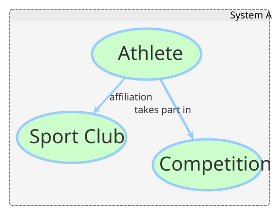
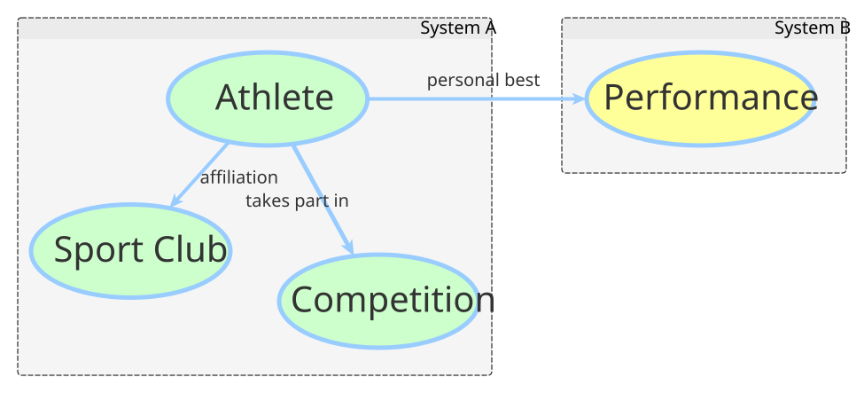
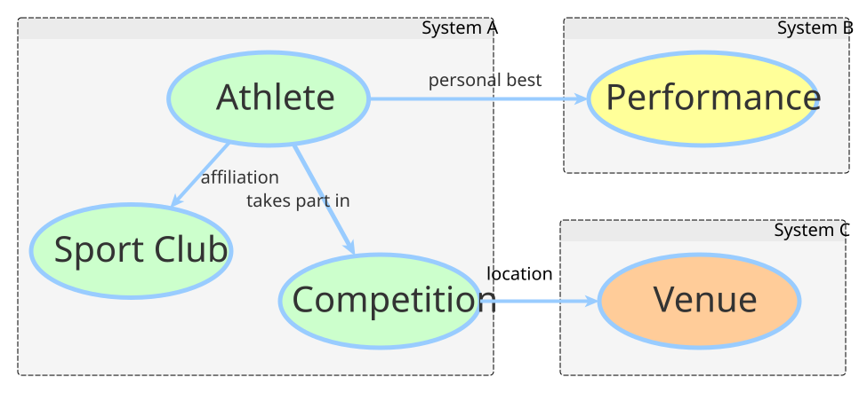
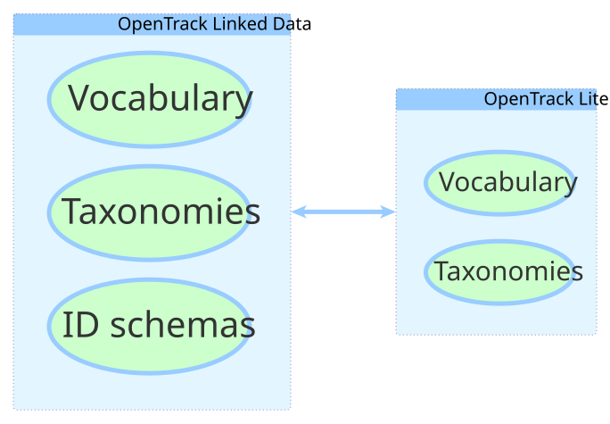

Athletics Data
Standardisation
Martin Alvarez-Espinar (CTIC/W3C Spain Office)

World Wide Web Consortium (W3C)
- Neutral world-wide organization
- Founded in 1994 by Tim Berners-Lee
- +400 Member organizations
- +1,500 researchers within +70 working groups
{kind=link}
Leading the Web to its full potential.
What we do?
CTIC/W3C Spanish Office
W3C OpenTrack Community Group
Objective: universal data interoperability
Stakeholders
Based on existing works
- Official Rules:
- Existing standards
Universal?
How?
IDs for “Things”
- Unique IDs for athletes, clubs, teams, event types…
- Universal IDs
http://example.com/Athlete/ID
Semantics on the Web
- “Things” described on the Web
- Athlete (name, date of birth,…)
- Competition, Results, Long Jump Trial,…
Semantic relations
Logical relations between “Things”

Network Effect
Linking data with external resources

Graph of knowledge
Infinite connections

Machines already understand these concepts
Final Outcomes
- Vocabulary
- Entities (athlete, venue,…)
- Properties to describe entities (name, location, email, …)
- Taxonomies (countries, disciplines, …)
- Common IDs for “Things” (Web identifiers)
Challenges
| Pros | Cons |
|---|---|
| Flexible | Loose schema |
| Extensible | Hard to implement |
| Standard | Difficult to understand |
| Universal |
Proposal
Reduced, tight schema
